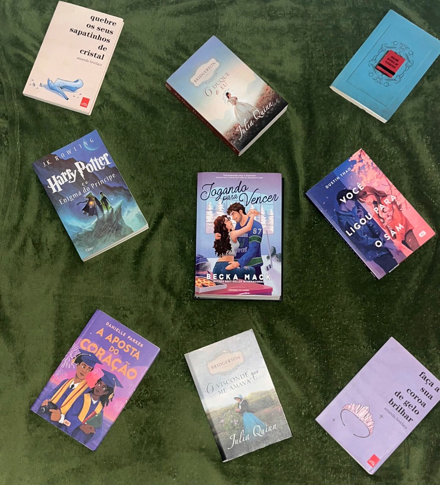
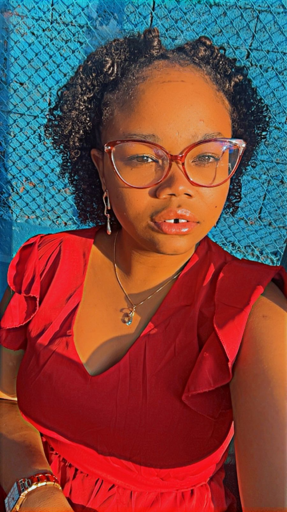

O Entre Linhas é um clube do livro inovador que combina a paixão pela leitura com elementos de gamificação para tornar a experiência literária ainda mais envolvente e recompensadora.
Nosso propósito é conectar leitores, incentivar a descoberta de novos gêneros e autores, e transformar a leitura em uma jornada divertida e interativa.
Complete missões, ganhe pontos, descubra novas histórias e evolua como leitor em nossa comunidade literária.

Explore diversos universos através de nossos gêneros selecionados
Histórias de amor e relacionamentos que tocam o coração e exploram as complexidades humanas.
Enigmas intrigantes e reviravoltas surpreendentes que mantêm você virando as páginas.
Explorações futuristas e especulações sobre tecnologia, espaço e sociedades alternativas.
Mundos mágicos, criaturas lendárias e aventuras épicas além da imaginação.
Onde páginas viram pontes entre leitores
Encontre sua tribo literária - pessoas que compartilham seu gosto por gêneros, autores ou simplesmente pela magia das histórias.
Nossos fóruns temáticos são espaços vibrantes onde cada interpretação agrega novas camadas à experiência de leitura.
De encontros virtuais a sessões de leitura coletiva, criamos momentos especiais para compartilhar o amor pelos livros.

Sou estudante de Sistemas de Informação e apaixonada por tecnologia e literatura. O Entre Linhas nasceu da minha vontade de unir essas duas paixões em um projeto que pudesse incentivar a leitura de forma criativa e interativa.
Durante o desenvolvimento deste projeto, pude aprimorar minhas habilidades em HTML, CSS, JavaScript e conceitos de gamificação, além de aprender sobre design de experiência do usuário e engajamento.
"Entre Linhas é mais do que um projeto. É meu universo de aprendizado, código e histórias."